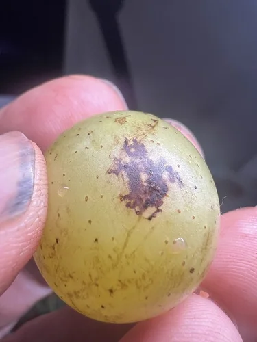

Pale-centred pits on grape berries
The contrasting rim and centre of a small berry lesion can resemble an eye. Check fresh green shoots for another part of the same symptom pattern.

What to look for
Inspect several berries on a cluster. A small sunken spot with a pale centre and dark rim can give grape anthracnose its familiar bird’s-eye appearance.
Check the pattern
Look at tender shoots for lengthwise sunken lesions and leaves for damaged centres that may have fallen away. A peck mark is usually an open wound, without the repeated ring pattern on neighbouring berries.
What to do
Mark heavily affected canes for removal during routine pruning. Collect damaged berries and leave room around clusters for air movement. Avoid wetting the canopy unnecessarily when watering.
When to check again
After the next rainy spell, inspect newly expanding shoots as well as fruit. If lesions recur across the vine, take pictures of both organs for identification before choosing a disease-management programme.
Read the edge of the spot
Use a side light and look across the berry surface rather than straight down. This shows whether the pale centre sits below the surrounding skin. Save a photo of an early lesion before splitting or secondary decay obscures its border.